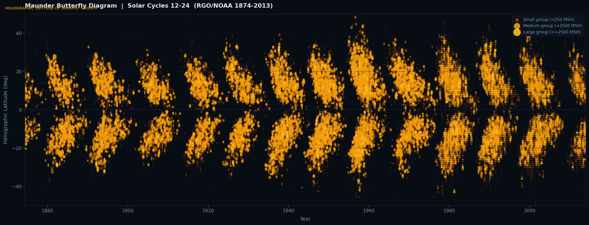

Real-time solar activity forecasting
Machine learning models trained on 275 years of solar observation data, forecasting short, medium and long-term solar activity.
Solar impact
Solar flares and coronal mass ejections can disable satellites, disrupt GPS systems, and endanger astronauts. Forecasting activity gives operators time to protect critical infrastructure.
The 1989 Quebec blackout and the 1859 Carrington Event demonstrated how intense solar storms can induce currents that overwhelm electrical grids. Accurate forecasting enables preventative action.
High-frequency radio communications, used by aviation and emergency services, are severely disrupted during solar maximum. Solar forecasting supports mission-critical planning.
Historical record
Sunspot latitude distribution across Solar Cycles 12–24 — Royal Greenwich Observatory data (1874–2013).

Each dot represents a sunspot group observation. The characteristic butterfly wing pattern emerges as sunspots migrate from high latitudes at cycle start toward the equator at cycle end — a phenomenon known as Spörer's Law.
Data: Royal Greenwich Observatory · Visualisation: Alfie Mowle
Data sources
The International Sunspot Number (ISN) is produced by the Royal Observatory of Belgium and represents the global standard measure of solar activity. Version 2.0 spans January 1749 to present, covering Solar Cycles 1 through 25 — over 275 years of continuous observation.
Visit SILSO →Historical sunspot group latitude data is sourced from the Royal Greenwich Observatory (RGO) and NOAA archives, spanning 1874 to 2013 across Solar Cycles 12 to 24. This dataset enables the butterfly diagram visualisation above.